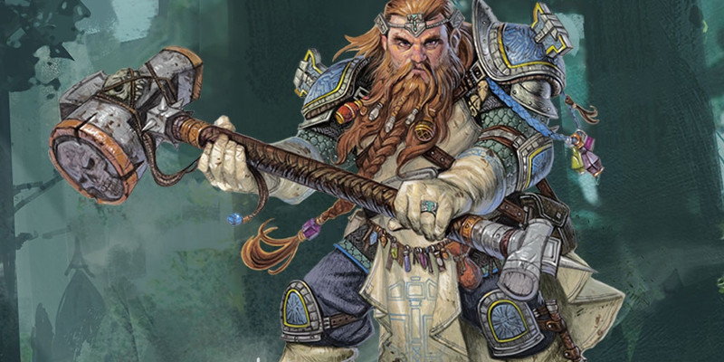

Domaines divins de clerc
Au niveau 1, un clerc gagne la capacité Domaine divin. Voici de nouvelles options de domaines :
- Domaine de la tombe
- Domaine de la protection
- Domaine de l'ordre
- Domaine de la forge
- Domaine du crépuscule
- Domaine de l'union
Domaine de la tombe
Les dieux de la tombe veillent sur la frontière entre la vie et la mort. Pour ces déités, la mort et l'au-delà sont une partie fondamentale du multivers. Pour eux, résister à la mort ou déranger le repos des morts est une abomination. Les dieux de la tombe incluent Kélemvor, Wee Jas, les esprits ancestraux de la cour d'Outre-Mort, Hadès, Anubis et Osiris. Ces dieux enseignent à leurs serviteurs à respecter les morts et à leur rendre hommage. Les fidèles de ces dieux aident les esprits tourmentés à trouver le repos. Ils détruisent les morts-vivants où qu'ils les trouvent, et apaisent les souffrances des créatures mourantes. Leur magie leur permet de sauver une créature de la mort, mais ils refusent d'utiliser celle-ci pour allonger la vie d'une créature au-delà de ses limites naturelles.
Sorts de domaine
| Niveau de clerc |
Sorts |
| 1 | fléau, simulacre de vie |
| 3 | préservation des morts, rayon d'affaiblissement |
| 5 | retour à la vie, toucher du vampire |
| 7 | flétrissement, protection contre la mort |
| 9 | coquille antivie, rappel à la vie |
Maîtrise supplémentaire
Au niveau 1, vous gagnez la maîtrise des armures lourdes.
Cercle de mortalité
Au niveau 1, vous gagnez la capacité de modifier la ligne entre la vie et la mort. Lorsque vous lancez un sort qui redonne des points de vie à une créature qui est à 0 pv, traitez n'importe quel dé lancé pour déterminer la quantité de soins comme s'il avait donné le résultat maximum. De plus, si vous possédez le sort mineur stabilisation, vous pouvez le lancer en tant qu'action bonus.
Les yeux de la tombe
À partir du niveau 1, vous gagnez un sens inné des créatures dont l’existence est une insulte au cycle naturel de la vie. Si vous passez 1 minute en contemplation ininterrompue, vous pouvez déterminer la présence et la nature de créatures morts-vivantes dans la zone. Cette détection s'étend jusqu'à 1,5 kilomètre dans toutes les directions. Vous apprenez le nombre de morts-vivants, leur distance et la direction dans laquelle ils se trouvent par rapport à vous. De plus, vous connaissez le type de la créature morte-vivante ayant le plus grand facteur de difficulté. Une fois que vous avez utilisé cette capacité, vous devez terminer un repos long avant de pouvoir l'utiliser à nouveau.
Conduit divin : voie de la tombe
À partir du niveau 2, vous pouvez utiliser votre Conduit divin pour marquer la force vitale d'une autre créature. Par une action, vous touchez une créature. La prochaine fois que cette créature prend des dégâts venant d'un sort ou d'une attaque de votre part ou de celle d'un de vos alliés, elle sera vulnérable au type de dégâts de ce sort ou de cette attaque. Si la source des dégâts est de plusieurs types, la créature est vulnérable à tous ces types de dégâts. La vulnérabilité s'applique seulement la première fois que cette source inflige des dégâts et prend fin immédiatement après. Si une créature était résistante ou immunisée à ce type de dégâts, elle ne devient pas vulnérable mais perd, pour cette fois, cette immunité ou cette résistance aux dégâts.
La sentinelle aux portes de la mort
À partir du niveau 6, vous gagnez la capacité de ralentir la mort. Par une réaction, lorsque vous, ou un allié que vous pouvez voir dans un rayon de 9 mètres autour de vous, recevez un coup critique, vous pouvez transformer cette attaque en un coup normal. Tout effet déclenché par un coup critique est annulé. Une fois que vous avez utilisez cette capacité, vous ne pouvez plus le faire jusqu'à ce que vous ayez terminé un repos court ou long.
Frappe divine
Au niveau 8, vous gagnez la capacité d'imprégner votre arme d'énergie divine. Une fois à chacun de vos tours, lorsque vous touchez une créature avec une arme, vous pouvez ajouter 1d8 de dégâts nécrotiques. Lorsque vous atteignez le niveau 14, les dégâts supplémentaires augmentent à 2d8.
Gardien des âmes
Au niveau 17, vous gagnez la capacité de manipuler la frontière entre la vie et la mort. Lorsqu'un ennemi que vous pouvez voir dans un rayon de 9 mètres autour de vous meurt, vous, ou un allié de votre choix situé 9 mètres ou moins de vous, regagnez un nombre de points de vie égal au nombre de dés de vie de cet ennemi. Vous pouvez utiliser cette capacité tant que vous n'êtes pas incapable d'agir, mais jamais plus d'une fois par round.
Domaine de la protection
Le domaine de la protection est la compétence des divinités qui chargent leurs disciples de protéger les faibles des forts. Les fidèles de ces dieux habitent dans les villages et les villes des régions frontalières, où ils aident à renforcer les défenses et rechercher les êtres maléfiques pour les affronter. Ces dieux croient qu'un bouclier robuste et une armure complète sont la meilleure défense contre le mal, avec seulement une grosse masse en main pour répondre aux attaques. Les divinités qui accordent ce domaine incluent Heaume, Ilmater, Torm, Tyr, Heironeous, St. Cuthbert, Paladine, Dol Dorn, Silver Flame, Bahamut, Yondalla, Athena et Odin.
Sorts de domaine
| Niveau de clerc |
Sorts |
| 1 | duel forcé, protection contre le mal et le bien |
| 3 | aide, protection contre le poison |
| 5 | lenteur, protection contre une énergie |
| 7 | gardien de la foi, sphère résiliente d'Otiluke |
| 9 | coquille antivie, mur de force |
Maîtrise supplémentaire
Au niveau 1, vous gagnez la maîtrise des armures lourdes.
Bouclier des fidèles
À partir du niveau 1, vous gagnez la capacité d'entraver les attaques destinées à d'autres. Quand une créature attaque une cible autre que vous mais située dans un rayon de 1,50 mètre autour de vous, vous pouvez utiliser votre réaction pour imposer un désavantage à son jet d'attaque. Pour ce faire, vous devez être en mesure de voir à la fois l'attaquant et la cible. Vous interposez un bras, un bouclier, ou une autre partie de vous-même pour tenter de parer l'attaque.
Conduit divin : défense radiante
À partir du niveau 2, vous pouvez utiliser votre Conduit divin pour recouvrir vos alliés d'une armure radieuse. Par une action, vous canalisez l'énergie bénie sur un allié que vous pouvez voir et qui se situe à 9 mètres ou moins de vous. La première fois qu'un allié est touché par une attaque dans la minute suivante, l'attaquant subit des dégâts rayonnants égaux à 2d10 + votre niveau de clerc.
Guérisseur béni
À partir du niveau 6, les sorts de guérison que vous lancez sur les autres peuvent vous guérir aussi. Lorsque vous lancez un sort en utilisant un emplacement de sort et qu'il restaure des points de vie à toute créature autre que vous durant ce tour, vous récupérez un nombre de points de vie égal à 2 + le niveau du sort.
Frappe divine
Au niveau 8, vous gagnez la capacité d'imprégner votre arme d'énergie divine. Une fois à chacun de vos tours lorsque vous touchez une créature avec une arme, vous pouvez faire en sorte que l'attaque inflige 1d8 dégâts radiants supplémentaires à la cible. Lorsque vous atteignez le niveau 14, les dégâts supplémentaires augmentent à 2d8.
Défense indomptable
Au niveau 17, vous gagnez la résistance à deux types de dégâts de votre choix, en choisissant parmi contondant, nécrotique, perforant, radiant et tranchant. Chaque fois que vous terminez un repos court ou long, vous pouvez changer les types de dégâts que vous avez choisis. Par une action, vous pouvez abandonner temporairement cette résistance et la transférer à une créature que vous touchez. La créature garde la résistance jusqu'à la fin de votre prochain repos court ou long, ou jusqu'à ce que vous la transfériez à vous-même par une action bonus.
Domaine de l'ordre
Le domaine de l'ordre représente la discipline ou le fait d’être au service d’une institution ou d'une société, mais toujours dans le cadre de la loi ou dans le but de la faire respecter, qu’il s’agisse de la loi civile, religieuse, ou des deux à la fois. Les dieux de nombreux mondes permettent d’accéder à ce domaine, comme Baine, Tyr, Majere, Érathis, Pholtus, Wy-Djaz, Auréon, Maglubiyet, Nuada, Athéna, Anubis, Forseti, et Asmodée. L’idéal de l'ordre correspond à l’obéissance à la loi en toutes circonstances plutôt qu’à l’obéissance à un individu particulier, aux émotions qui nous traversent, ou aux règles populaires traditionnelles. Les clercs de l’ordre s’intéressent plus à la manière dont une action est réalisée qu’au fait que le résultat de cette action soit juste ou non. Suivre la loi et obéir à ses décrets sont essentiels, en particulier lorsque cela bénéficie à ces clercs et à leur divinité. Plus important encore, la loi établit une hiérarchie. Ceux qui sont désignés par la loi pour diriger doivent être obéis. Ceux qui sont à leur service doivent leur obéir au mieux de leurs capacités. De cette manière la loi met en place un dense réseau d’obligations dont découlent l’ordre et la sécurité, alliage fondamental de toute société dans le chaos du multivers.
Sorts de domaine
| Niveau de clerc |
Sorts |
| 1 | injonction, héroïsme |
| 3 | amélioration de caractéristique, immobilisation de personne |
| 5 | mot de guérison de groupe, lenteur |
| 7 | compulsion, localisation de créature |
| 9 | communion, domination de personne |
Maîtrise supplémentaire
Au niveau 1, vous gagnez la maîtrise des armures lourdes.
Voix d’autorité
À partir du niveau 1, vous pouvez faire appel au pouvoir de la loi pour inciter un allié à attaquer. Immédiatement après que vous ayez lancé un sort utilisant un emplacement de niveau 1 ou supérieur sur un allié, cet allié peut utiliser sa réaction pour effectuer un jet d’attaque avec une arme contre une cible de votre choix que vous pouvez voir. Si le sort cible plus d’un seul allié, vous choisissez l’allié qui effectue l’attaque.
Conduit divin : besoin d’ordre
À partir du niveau 2, vous pouvez utiliser votre Conduit divin pour faire ressentir votre présence intimidante aux autres. En utilisant une action, vous brandissez votre symbole sacré, et chaque créature de votre choix qui peut vous voir ou vous entendre dans un rayon de 9 mètres autour de vous doit réussir un jet de sauvegarde de Sagesse sous peine d’être charmée jusqu’à la fin de votre prochain tour ou jusqu’à ce qu’elle subisse des dégâts. Vous pouvez également décider qu’une créature charmée tombe à terre si elle rate son jet de sauvegarde.
Suprématie de l’ordre
Au niveau 6, votre capacité à manier l’énergie divine pour contraindre les autres s’est formidablement améliorée. Lorsque vous lancez un sort de l’école d’enchantement en utilisant un emplacement de sort de niveau 2 ou supérieur, vous récupérez un emplacement de sort dépensé. L’emplacement de sort que vous récupérez doit être d’un niveau inférieur à celui du sort que vous venez de lancer et ne peut pas être supérieur au niveau 5.
Frappe divine
Au niveau 8, vous obtenez la capacité d’imprégner votre arme d’énergie divine. Une fois à chacun de vos tours lorsque vous touchez une créature lors d’une attaque avec une arme, vous pouvez décider que cette attaque inflige 1d8 dégâts de force supplémentaire à cette cible. Lorsque vous atteignez le niveau 14, les dégâts supplémentaires passent à 2d8.
Courroux de l’ordre
À partir du niveau 17, les ennemis que vous condamnez à la destruction succombent sous les efforts combinés de vos alliés et de vous-même. Si vous infligez les dégâts de votre Frappe divine à une créature, cette créature subit 2d8 dégâts de force supplémentaires la première fois de chaque tour qu’un de vos alliés la touche lors d’une attaque avec une arme. Cet effet dure jusqu’au début de votre prochain tour.
Domaine de la forge
[ Cet archétype a ensuite été publié dans sa version finale dans le Xanathar's Guide to Everything ]
Domaine du crépuscule
Le domaine du crépuscule régit la transition et la fusion de la lumière dans l'obscurité. C’est une période de repos et de confort, mais aussi un seuil entre la sécurité et l'inconnu. Des dieux de guérison ou de répit (comme Boldrei, Hestia, Mishakal ou Pélor), de la bravoure ou de la protection (comme Dol Arrah, Hajama, Heaume ou Ilmater), des voyages ou de la transition (comme Fharlanghn, Hermes, la Reine corneille ou le Voyageur), ou de la nuit et des rêves (comme Célestian, Morphée, Nut ou Séluné) peuvent conférer le domaine du crépuscule à leurs clercs. Les clercs qui servent ces divinités ont tendance à être courageux, s'enfonçant dans l'obscurité pour y maîtriser ses dangers et apporter du réconfort à ceux qui sont perdus loin de la lumière.
Sorts de domaine
| Niveau de clerc |
Sorts |
| 1 | lueurs féeriques, sommeil |
| 3 | ténèbres, invisibilité |
| 5 | aura de vitalité, petite hutte de Léomund |
| 7 | aura de vie, invisibilité supérieure |
| 9 | cercle de pouvoir, songe |
Maîtrises supplémentaires
Au niveau 1, vous gagnez la maîtrise des armes de guerre et des armures lourdes.
Yeux de la nuit
Au niveau 1, vos yeux sont bénis, vous permettant de voir à travers les ténèbres les plus profondes. Vous avez la vision dans le noir sans une distance maximum ; vous pouvez voir dans une lumière faible comme vous verriez avec une lumière vive, et dans le noir comme vous verriez avec une lumière faible. Au prix d'une action, vous pouvez magiquement faire bénéficier de cette capacité à des créatures que vous pouvez voir dans un rayon de 3 mètres autour de vous durant 10 minutes. Vous pouvez utiliser cette capacité un nombre de fois égal à votre modificateur de Sagesse (minimum une fois) et vous récupérez tous les usages de cette capacité lorsque vous terminez un repos long.
Bénédiction vigilante
Au niveau 1, la nuit vous a appris à être vigilant. Par une action, vous donnez à une créature que vous touchez (ou éventuellement à vous-même) un avantage à son prochain jet d'initiative. Ce gain prend fin immédiatement après le jet d'initiative ou si vous utilisez de nouveau cette capacité.
Conduit divin : sanctuaire du crépuscule
RAPPEL DES RÈGLES : LES POINTS DE VIE TEMPORAIRES NE SE CUMULENT PAS
Si vous avez des points de vie temporaires et en recevez d'autres, vous ne pouvez les ajouter aux premiers, à moins qu'une règle ne précise le contraire. Vous devez décider quels points de vie temporaires vous gardez. Pour plus d'informations sur les points de vie temporaires, consultez le chapitre 9 du Manuel des Joueurs.
À partir du niveau 2, vous pouvez utiliser votre Conduit divin pour revigorer vos alliés. Par une action, vous présentez votre symbole sacré et une sphère de crépuscule émane de vous. La sphère est centrée sur vous, possède un rayon de 9 mètres et est remplie de lumière faible. La sphère se déplace avec vous et dure 1 minute ou jusqu'à ce que vous soyez incapable d'agir ou mort. Chaque fois qu'une créature (y compris vous-même) termine son tour dans la sphère, vous pouvez accorder à cette créature l'un des avantages suivant :
- Vous lui donnez 1d8 points de vie temporaires.
- Vous mettez fin a un effet qui la rend charmé ou effrayé.
Pas du brave
Au niveau 6, vous tirez une force de votre connexion au crépuscule et êtes à l'aise dans sa sombre étreinte, ce qui vous procure deux avantages :
- Vous avez un avantage aux jets de sauvegarde pour ne pas être effrayé.
- Si vous êtes dans une lumière faible ou dans des ténèbres, vous pouvez utiliser une action bonus pour vous donner magiquement une vitesse de vol égale à votre vitesse de marche jusqu'à la fin de votre prochain tour.
Frappe divine
Au niveau 8, vous gagnez la capacité d'imprégner vos frappes avec une arme d'énergie divine. Une fois à chacun de vos tours lorsque vous touchez une créature lors d'une attaque avec une arme, vous pouvez lui infliger 1d8 dégâts psychiques supplémentaires. Lorsque vous atteignez le niveau 14, ces dégâts supplémentaires passent à 2d8.
Linceul de minuit
À partir du niveau 17, vous pouvez exploiter le pouvoir enveloppant de la nuit pour protéger vos alliés et gêner vos ennemis. Chaque fois que vous lancez le sort ténèbres en utilisant un emplacement du sort, vous pouvez choisir un nombre de créatures que vous pouvez voir (y compris vous-même) égal à votre modificateur de Sagesse (minimum une). Les créatures choisies peuvent voir dans les ténèbres.
Domaine de l'union
Un sens d’unicité brille au cœur des communautés en bonne santé, qu'elles soient reliées ensemble par l’amitié, le sang, la foi ou quelle qu’autre force d’union. Les dieux de l’union approfondissent de tels liens et se délectent de leur force. Les clercs de ces dieux président les mariages et autres usages reliant les familles, mais ils entretiennent aussi les liens d’amitié et de camaraderie. Leurs bénédictions divines soutiennent et protègent les alliés dans la bataille à travers ces liens profonds et repoussent les influences mauvaises.
Sorts de domaine
Capacité du domaine de l'union de niveau 1
| Niveau de clerc |
Sorts |
| 1 | bouclier de la foi, héroïsme |
| 3 | aide, lien de protection |
| 5 | communication à distance, lueur d’espoir |
| 7 | aura de pureté, gardien de la foi |
| 9 | lien télépathique de Rary, restauration supérieure |
Lien enhardissant
Capacité du domaine de l'union de niveau 1
Vous pouvez forger un lien amélioré entre des alliés. Par une action, vous pouvez choisir deux créatures consentantes que vous pouvez voir dans un rayon de 9 mètres autour de vous (cela peut vous inclure) et créer un lien magique entre elles. Tant que les créatures liées sont à 9 mètres l’une de l’autre, la créature peut lancer un d4 et l’additionner à un jet d’attaque, de caractéristique ou de sauvegarde qu’elle fait. Chaque créature ne peut additionner le d4 qu'une seule fois par tour. Le lien dure pendant 1 heure ou jusqu’à ce que vous utilisiez cette capacité à nouveau. Vous pouvez utiliser cette capacité une fois et regagnez la possibilité de le faire de nouveau après avoir terminé un repos long. Vous pouvez aussi dépenser un emplacement de sort pour utiliser cette capacité à nouveau.
Conduit divin : fardeau partagé
Capacité du domaine de l'union de niveau 2
Vous pouvez utiliser votre Conduit divin pour protéger vos alliés à travers la force de vos liens partagés. Quand une créature que vous pouvez voir dans un rayon de 9 mètres autour de vous subit des dommages, vous pouvez utiliser votre réaction pour choisir un nombre d’autres créatures consentantes que vous pouvez voir, jusqu'à concurrence de votre modificateur de Sagesse (minimum une créature). Distribuez les dommages subit entre la cible originale et les créatures choisies. Chaque créature doit prendre au moins 1 point de dégât. Appliquez n’importe quelle résistance ou invulnérabilité des créatures impliquées après avoir distribué les dommages.
Lien protecteur
Capacité du domaine de l'union de niveau 6
Le lien que vous forgez entre les gens les protègent des préjudices. Tant que les créatures choisies pour votre capacité de Lien enhardissant sont à 9 mètres l'une de l’autre, chacune peut utiliser sa réaction pour accorder à l’autre créature la résistance à tous les dégâts quand celle-ci subit des dommages. Cette résistance dure jusqu'à la fin du tour en cours.
Incantation puissante
Capacité du domaine de l'union de niveau 8
RAPPEL DES RÈGLES : FRAPPE DIVINE OU INCANTATION PUISSANTE
Chaque domaine divin du Manuel des joueurs donne à un clerc l'une des deux capacités suivantes au niveau 8 : Frappe divine ou Incantation puissante. Si les clercs d'un domaine dépendent de l'utilisation d'une arme, ils obtiennent Frappe divine. Les autres obtiennent Incantation puissante.
Vous ajoutez votre modificateur de Sagesse aux dommages que vous infligez avec n’importe quel sort mineur de clerc.
Union endurante
Capacité du domaine de l'union de niveau 17
Les liens que vous créez supporte les longues distances. Les créatures affectées par votre capacité Lien enhardissant en gagnent les bénéfices, ainsi que ceux de votre capacité Lien de protection, tant qu’elles sont sur le même plan d’existence. De plus, quand une créature choisie pour votre Lien Enhardissant est réduite à 0 point de vie, son partenaire de lien gagne les avantages suivants durant 1 minute, ou jusqu'à ce que la créature regagne au moins 1 point de vie :
- La créature à un avantage à ses jets d’attaque, de caractéristique et de sauvegarde
- La créature gagne la résistance à tous les dégâts
- Par une action, la créature peut toucher son partenaire de lien pour dépenser et lancer n’importe quel nombre de dés de vie. Son partenaire lié regagne alors un nombre de points de vie égal au total lancé.

Traduit par kevetoile, weus, Ellef13, boblebuter, blueace et glooping